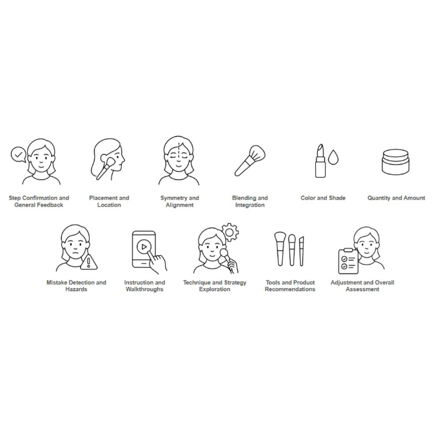
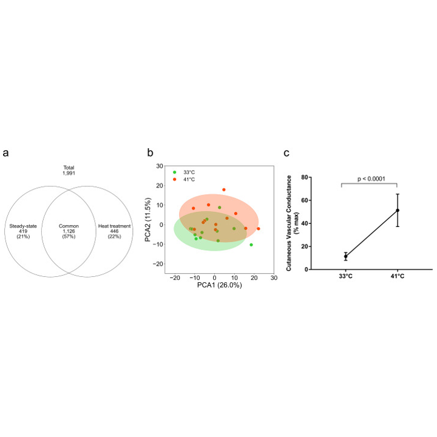
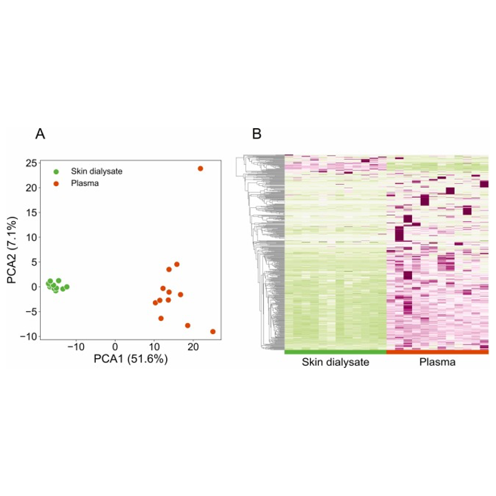
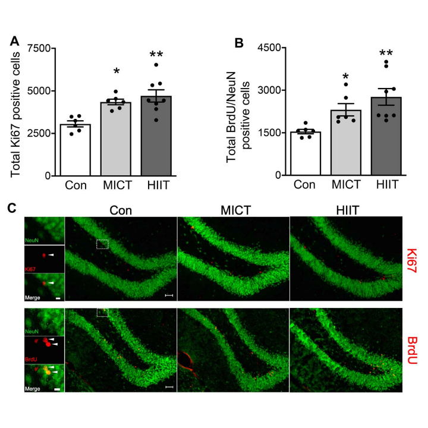
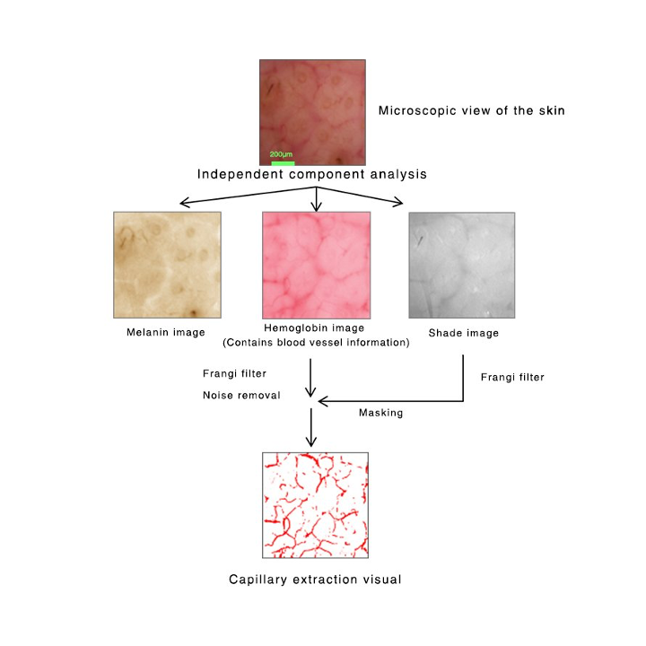
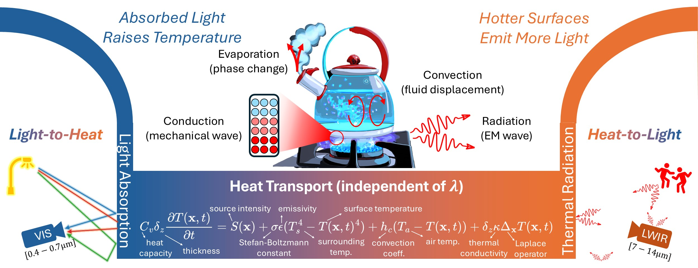

- ・Best Poster Award, CVPR Workshop on Computational Cameras and Displays, 2025.
- ・Paper on "Resolving Ambiguities in Heat Conduction and Shading" accepted to ICCP 2025.
|
|
|
Resolving Ambiguities in Heat Conduction and Shading
Akihiko Oharazawa, Sriram Narayanan, Mani Ramanagopal, Srinivasa G. Narasimhan
IEEE International Conference on Computational Photography (ICCP), 2025
|
|

|
More than One Step at a Time: Designing Procedural Feedback for Non-visual Makeup Routines
Franklin Mingzhe Li, Akihiko Oharazawa, Chloe Qingyu Zhu, Misty Fan, Daisuke Sato, Chieko Asakawa, Patrick Carrington
International ACM SIGACCESS Conference on Computers and Accessibility (ASSETS), 2025
|
|

|
Metabolomics of the Skin Dialysate Collected from the Forearm Subjected to Local Heating
Akihiko Oharazawa, Gulinu Maimaituxun, Koichi Watanabe, Takeshi Nishiyasu, Naoto Fujii
Journal of Investigative Dermatology, 2025
|
|

|
Metabolome Analyses of Skin Dialysate: Insight into Skin Interstitial Fluid Biomarkers
Akihiko Oharazawa, Gulinu Maimaituxun, Koichi Watanabe, Takeshi Nishiyasu, Naoto Fujii
Journal of Dermatological Science, 2024
|
|

|
High-intensity Intermittent Training Enhances Spatial Memory and Hippocampal Neurogenesis Associated with BDNF Signaling in Rats
Masahiro Okamoto, Daisuke Mizuuchi, Koki Omura, Minchul Lee, Akihiko Oharazawa, Jang Soo Yook, Koshiro Inoue, Hideaki Soya
Cerebral Cortex, 2021
|
|

|
Skin Capillary Extraction Technique Based on Independent Component Analysis and Frangi Filter using Videomicroscopy
Akihiko Oharazawa, Masaki Ogino, Masaru Sugahara, Masanori Tanahashi
Skin Research & Technology, 2020
|

Vision with Heat and Light
2024-Present (CMU)
Jointly leveraging thermal and optical information for physics-based scene understanding and novel imaging modalities.
- ・P2025-086813, Information Processing System, Method, and Computer Program (2025)
- ・P2025-086812, Information Processing System, Method, and Computer Program (2025)
- ・WO24-019101, Information Presentation Method and Device (2023)
- ・P2023-117376, Information Presentation Method and Device (2023)
- ・P2023-102083, Skin Imaging System (2023)
- ・P2022-046771, Lip Evaluation Method (2022)
- ・P2022-086627, Lip Evaluation Method (2022)
- ・P2019-039939, Image Processing Method (2019)
|
|
{kind=link}